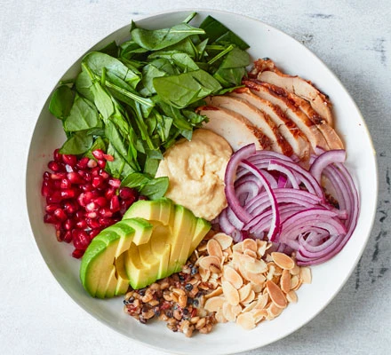

Description
Ever fed up of the usual boring sandwiches for lunch? Well give this
incredible chicken hummus bowl a try, and inject some variety into your
food. This incredibly simple recipe is quick, easy to make, and packed
full of nutrition. Those stale sandwiches will be a distant memory after this!
Ingredients
- 200g hummus
- 1 lemon
- 200g cooked mixed grains
- 150g baby spinach
- 1 avocado
- 1 cooked chicken breast
- 100g pomegranate seeds
- 1/2 red onion
- 2 tbsp toasted almonds
Steps
- Mix 2 tbsp of the hummus with half the lemon juice, the lemon
zest and enough water to make a drizzly dressing. Squeeze the
grain pouch to separate the grains, then divide between two shallow
bowls and toss through the dressing. Top each bowl with a handful
of the spinach.
- Squeeze the remaining lemon juice over the avocado halves, then
add one half to each bowl. Divide the chicken, pomegranate seeds, onion,
almonds and remaining hummus between the two bowls and gently mix everything
together just before eating.